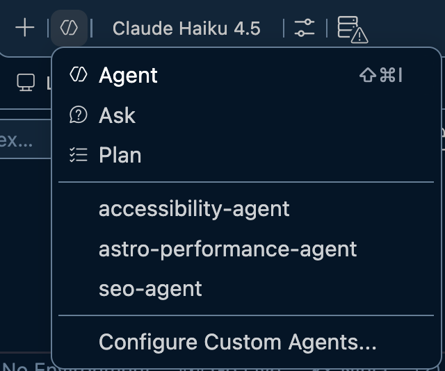
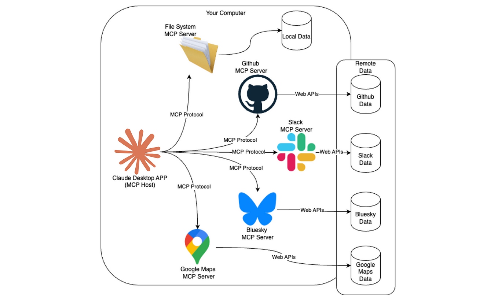
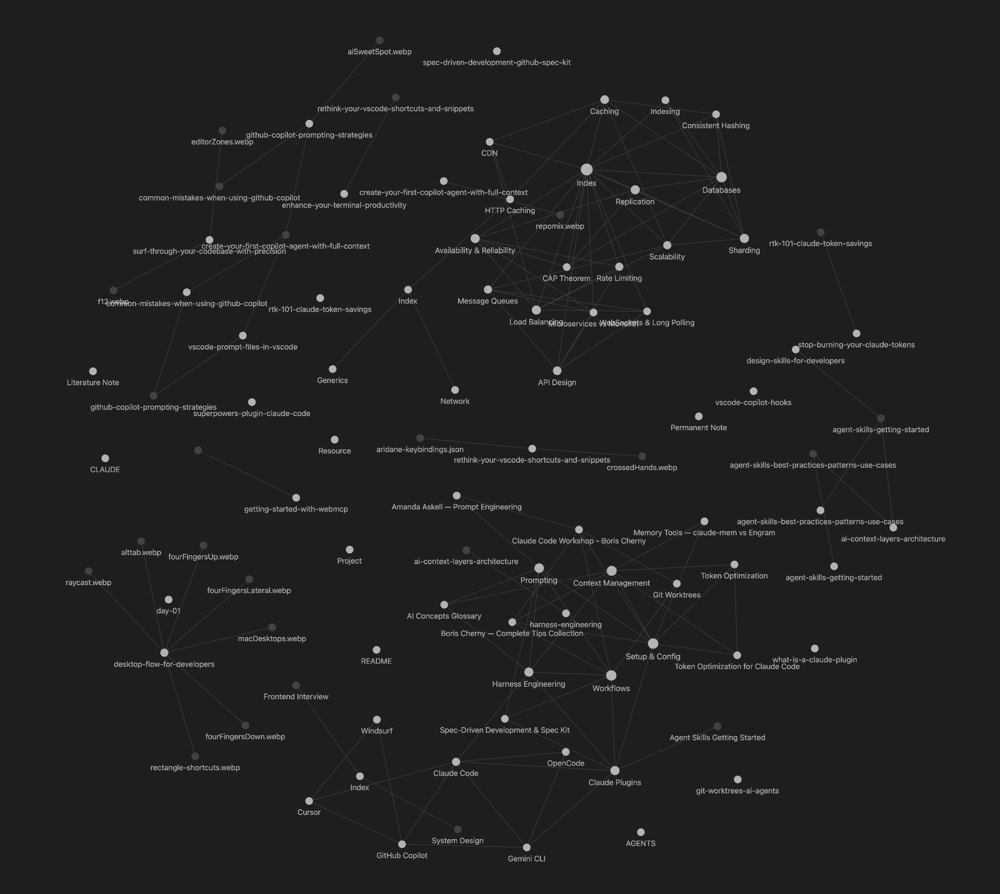

Day 2
- Subagents
- From prompt to Loop engineering
- Agent Hooks
- MCP and CLIs
- Plugins
- Obsidian: Working with a Second Brain
- RAG Basic Concepts
Subagents
A subagent is a separate AI model instance spawned by the main agent to handle a bounded task with its own context window and tool access.
- Isolated context — does not share the parent's memory
- Can use a different tool set than the orchestrator
- Multiple subagents can run in parallel
- Returns a single result back to the orchestrator

From prompt
to Loop engineering
From prompt
to loop engineering
Key idea: as systems mature, the value moves from From prompt loop engineering.
Agent
Hooks
Shell commands
on agent events
-
Fire on lifecycle events:
PreToolUse,PostToolUse,Stop,Notification - Output is injected back into the agent's context as feedback
-
Exit
0→ continue · Exit2→ block and force the agent to react to our feedback - No token cost — they run entirely outside the LLM
#!/bin/bash
# PreToolUse hook — block rm commands
input=$(cat)
command=$(echo "$input" | jq -r '.tool_input.command')
if [[ "$command" == rm* ]]; then
echo "Blocked: rm commands are not allowed" >&2
exit 2
fi
exit 0MCP
and CLIs
The tools
layer
MCP is the open protocol that lets agents connect to external services in a standard way: databases, APIs, browsers, file systems…
- Created by Anthropic, adopted across the industry
- The agent can read, write, and execute real actions
- Each MCP server exposes tools and resources
- No need to modify the model — just connect the server
Key idea: MCP turns the agent from chatbot into an assistant with access to the real world.

Some MCP Servers to Consider
- Filesystem — read and write files
- Chrome DevTools / Playwright — automate the browser
- GitHub — PRs, issues, commits
- Slack / Gmail — messages and email
- Context7 — up-to-date documentation
- Linear / Jira — task management
- Supabase — database queries
- Figma — design file manipulation
- Any REST API — with a custom server
Plugins
Install once,
ready everywhere
Most AI agents now ship a plugin system — a marketplace where you install pre-built capabilities and toggle them on or off without touching config files.
- Enable or disable per project or globally
- Community-built + officially verified tiers
- One-click install — no manual config files
Every major AI agent ships a plugin marketplace — it's the new extension model for developer tools.
Superpowers, Frontend Design, GitHub, Context7 — community + verified
Extensions marketplace — Sentry, DataStax, Docker, LaunchDarkly…
Plugin system for terminal-native AI — composable, open source
Obsidian
& Second Brain
A graph of
linked notes
- All notes are plain Markdown
- Powerful search and tags
- Works fully offline
- Bidirectional links. You can connect any note to any other
- Plugin ecosystem around 1,000+ community plugins
- Sync via Obsidian Sync (Paid feature), iCloud, or Git
Your knowledge as a graph of portable Markdown files.

The vault
as context
-
Notes become specs, feed them to the agent via
AGENTS.md / CLAUDE.mdor MCP - AI creates notes from conversations. Capture knowledge automatically
- Graph connections surface context the agent wouldn't otherwise see
- AI updates notes with new information. Docs that stay fresh!
- 💡 Skills living in the vault — portable across projects and tools
The vault is not a document graveyard, it's curated context the agent reads.
Build the
MCP bridge
Create an MCP server that fetches data from your local Obsidian project
Points to consider:
-
Start with this tools: list_notes - Shows every note in the
vault or inside an specific section
- Keep the vault read-only, searchable, and auditable
- Let the agent pull only the context it needs, when it needs it
Goal: make your vault available as live context without turning it into a dump of raw files.
list_notes({
folder?: string,
limit?: number
})
// Show me all notes inside Courses/AI.
search_notes({
query: string,
folder?: string,
limit?: number
})
// Search my Obsidian vault for notes about MCP servers.
RAG Basic
Concepts
Not training.
Context at query time.
- RAG = Retrieval-Augmented Generation
- The model's knowledge is frozen at training
- No fine-tuning or retraining required
- Example: ask questions about your team's docs, a CV, or a company knowledge base
Key idea: RAG does not change the model — it changes what the model sees before answering.
Index once.
Retrieve per query.
Indexing (done once)
- Load documents
- Split into chunks
- Embed each chunk
- Store in vector DB
Retrieval (every request)
- Embed the user's question
- Find closest chunks by similarity
- Inject chunks into the prompt
- Model answers using that context
Common
RAG problems
Test your retrieval layer independently — do not blame the model before inspecting what it actually received.
- Bad chunking — splits mid-sentence or mid-concept
- Wrong retrieval — irrelevant chunks returned
- Stale documents — outdated data in the index
- Too much context — flooding the model with noise
- Hallucination — model fills gaps when chunks miss the answer